"Ik kom al 15 jaar maandelijks bij Tania, en iedere keer opnieuw met veel plezier! Op en top in orde, van hygiëne tot afwerking. Merci voor de afgelopen 15 jaar! Op naar de volgende 15!"
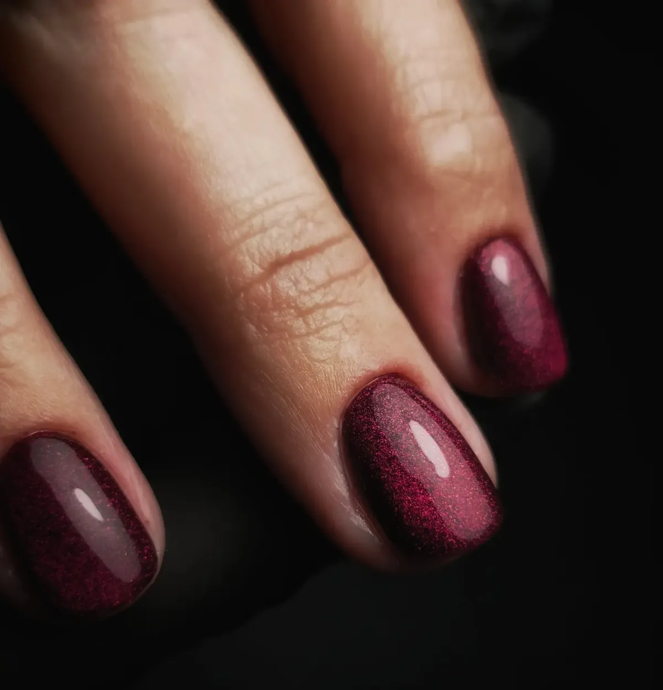
Nagelstudio in Genk · al 19 jaar
Zo mooi dat ze vragen of ze echt zijn.
Gelnagels, builder gel en handgeschilderde nail art bij Tania. Sommige klanten van het eerste uur zitten vandaag nog altijd bij haar in de stoel.
5,0
★★★★★33 reviews
op Google
op Google
Recente sets
Kleur kiezen is het leukste deel.
Van een diepe framboos cat eye tot een zachte nude met glitter: Tania werkt met merken die ze zelf door en door kent. Twijfel je, dan kiezen jullie samen.
"Niet te donker, niet te licht, niet te oranje en vooral niet te transparant. Gewoon dat perfecte rood."Tania, over haar favoriete rood
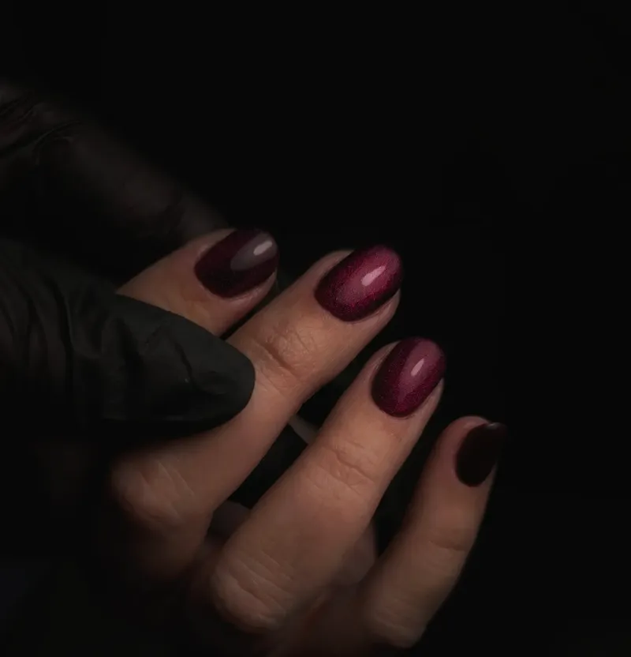
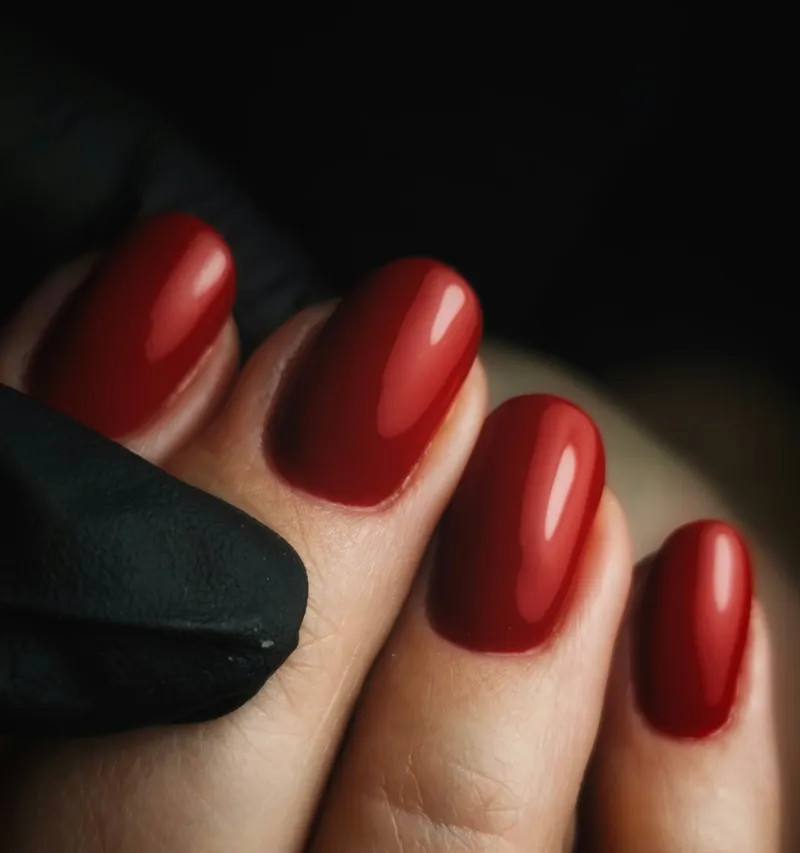
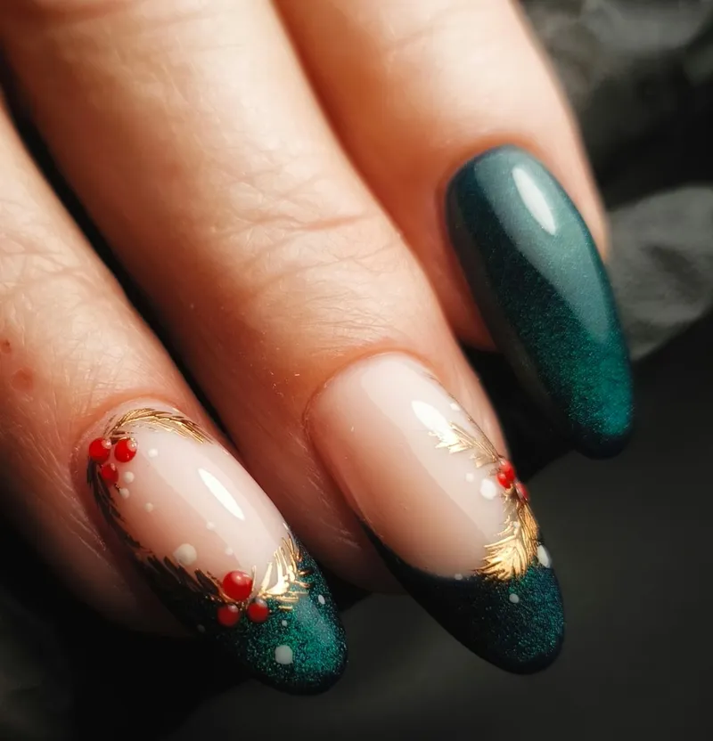
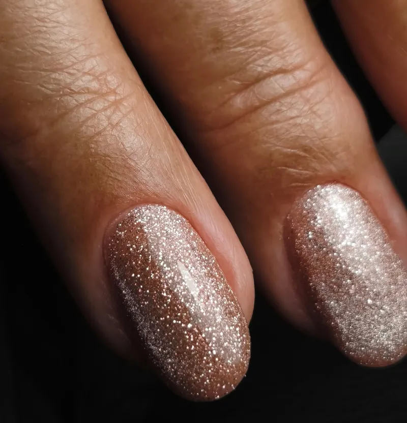
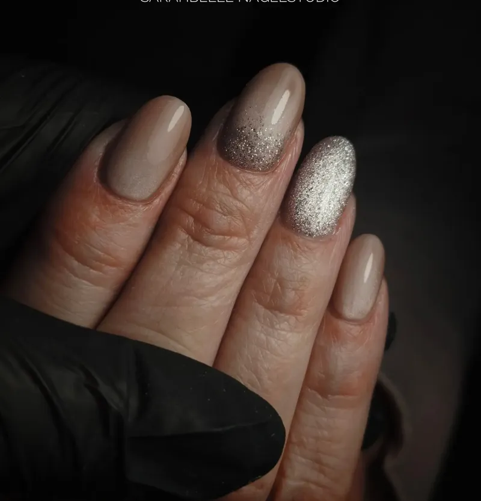
Handgeschilderd
Kleine kunstwerkjes, met de hand gezet.
Bloemen, vlinders, one stroke, een feestelijke french: Tania schildert alles zelf, penseel per penseel. Elke maandag zet ze op Instagram twee sets naast elkaar en mag jij kiezen.
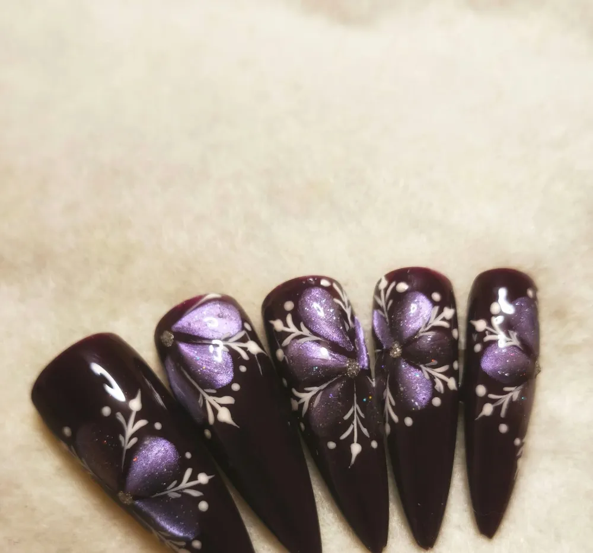
Set 1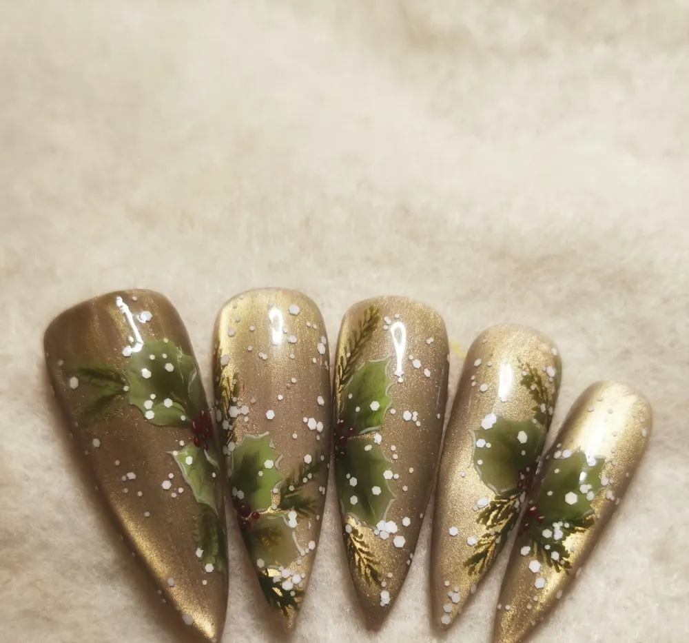
Set 2Set 1 of set 2?
Zie je een set die je wil? Stuur Tania een screenshot en plan je afspraak in.
Stuur je favorietGelnagelsVerzorgd, sterk en in elke kleur die je wil.
Builder gelExtra stevigheid voor je eigen nagels.
Cat eyeDie diepe glans die beweegt in het licht.
Nail artHandgeschilderd, van één accent tot een volledige set.
VoetenOok je voeten krijgen dezelfde zorg.
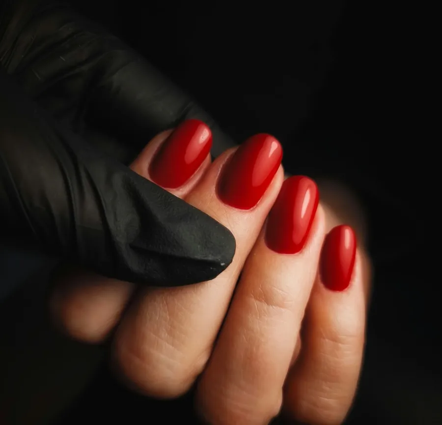
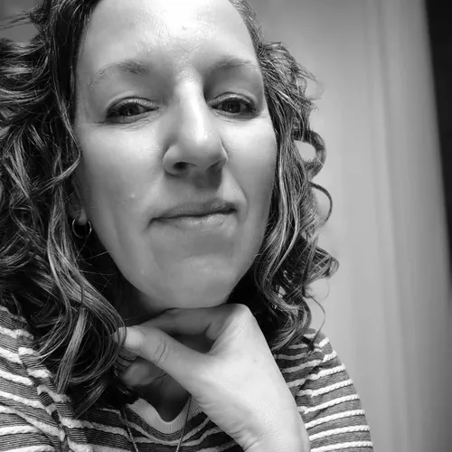
Hallo, ik ben Tania
19 jaar nagels, en nog altijd even graag.
"Topkwaliteit nagels en handgeschilderde nail art: daar sta ik voor. De producten die ik gebruik moeten simpelweg the best of the best zijn, voor mezelf én voor mijn klanten."
- Thuis wacht Ginger, volgens Tania de meest gekuste hond ter wereld.
- Koffie hoef je haar niet aan te bieden: ze begrijpt nog altijd niet wat mensen er lekker aan vinden.
- Ze kan verdwalen in boeken, boekhandels en kastelen. En ze houdt van quotes die je even laten stilstaan.
- Ze is ambassadeur van Nio Nails Store en Nellish en werkt met merken als BIBLIOTEKA en Makear.
Wat klanten zeggen
Klanten die al 15 jaar blijven.
5,0★★★★★
uit 33 reviews op Google
uit 33 reviews op Google
"Een echte professional die zeer secuur werkt. Ik krijg vaak complimenten over mijn nagels dat ze echt lijken."
"Ik kom bij Tania voor mijn voeten. Echt van begin tot het einde goede verzorging, heel voorzichtig en goede advies."
"Toen ik jaren geleden voor de eerste keer bij haar kwam waren mijn nagels een ramp! Aangetast door gebruik van slechte producten en hygiëne! Nu ga ik iedere keer fier naar huis met mooie verzorgde nagels."
Afspraak maken
Stuur een berichtje, Tania zoekt een plekje.
De studio werkt enkel op afspraak, aan de Barenzaallaan 20 in Genk. Het snelst gaat het via WhatsApp, of boek zelf online.
- Maandag, dinsdag, donderdag 8u30 tot 19u30
- Woensdag 8u30 tot 17u
- Vrijdag 8u30 tot 16u
- Zaterdag 8u30 tot 13u
- Zondag gesloten
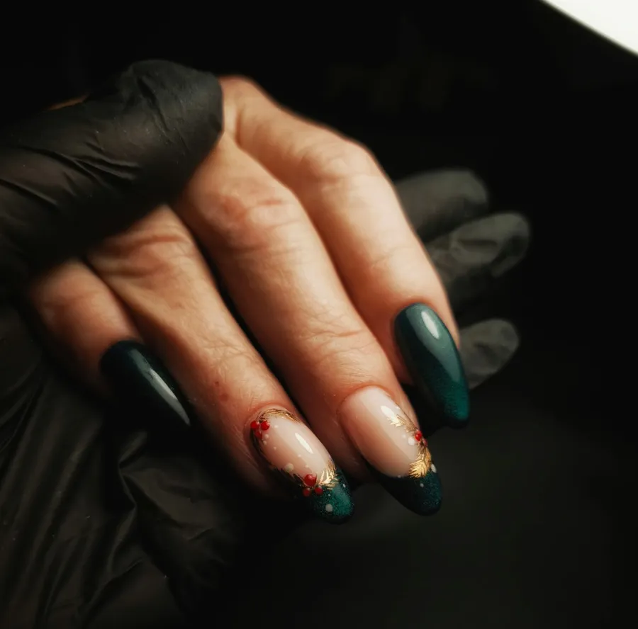